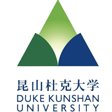

昆山杜克大学 iCreate Club 由创新创业中心陈正阳老师指导，iCreate Club 由我校数字媒体与艺术、数据科学与大数据技术、计算机科学与技术、心理学（行为科学）、材料科学与工程等专业的50名学生组成。我校 iCreate Club 定期组织开展学生活动，发挥学生专业知识，在不同领域施展才华。我们与数字媒体与艺术专业学生长期进行联动互动，借助校内强大的软硬件实力和 iOS 平台，将音乐、美术、影像、设计、大数据等不同的艺术元素交织在一起，激发创作更多充满想象的作品，同时校内教授也将积极参与到 iCreate Club 官方组织的活动中，共同促进学习交流。
指导老师
陈正阳
邮箱
zhengyang.chen@dukekunshan.edu.cn